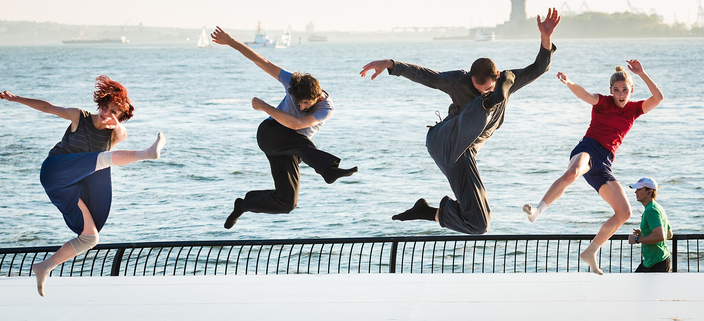
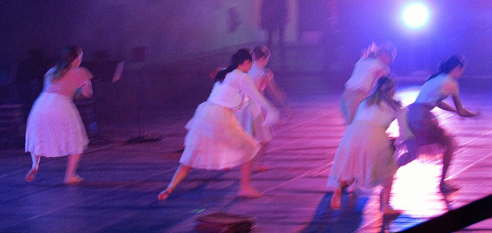
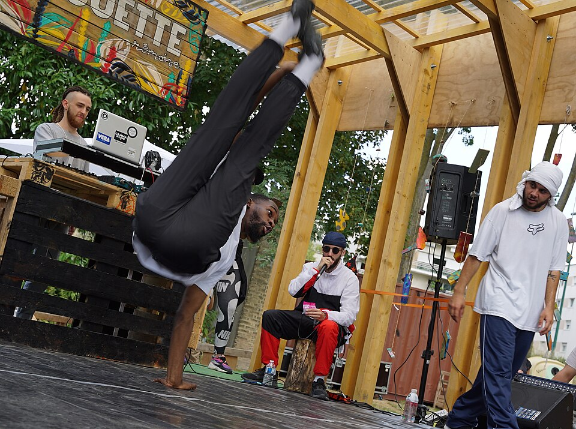
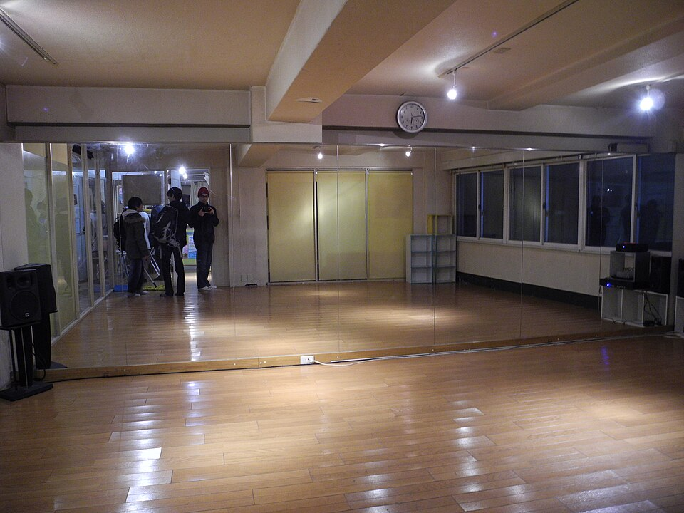
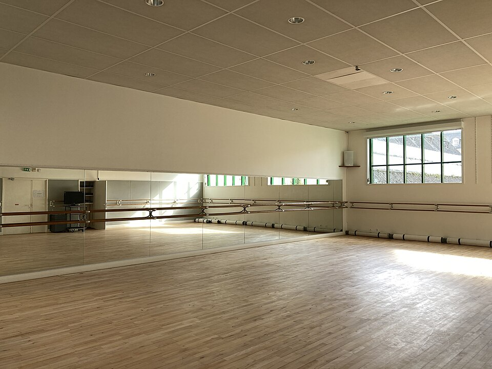

Фото та ліцензії
Фото: автори та ліцензії
Усі фотографії сайту взято з Wikimedia Commons за вільними ліцензіями. Нижче — повний перелік із зазначенням авторів і джерел, як того вимагають умови ліцензій CC BY / CC BY-SA.

Battery Dance Festival - Zeynap Tanbay Dance Project (Turkey) (28793347300).jpg
Автор: Steven Pisano from Brooklyn, NY, USA · Ліцензія: CC BY 2.0
Джерело на Wikimedia Commons →King & Queen Competition Carnaval San Francisco 2017 178 (33319033244).jpg
Автор: Carnaval.com Studios from The Inner Mission San Francisco, Earth · Ліцензія: CC BY 2.0
Джерело на Wikimedia Commons →
Wasatch Contemporary Dance Company (40285736230).jpg
Автор: Ben P L from Provo · Ліцензія: CC BY-SA 2.0
Джерело на Wikimedia Commons →Стрипы единицы High Heels.jpg
Автор: Maryucca · Ліцензія: CC BY-SA 4.0
Джерело на Wikimedia Commons →
230201-N-DK722-1008 - NAVEUR-NAVAF Band visits Nigerian National Museum and University of Lagos.jpg
Автор: Petty Officer 2nd Class Cameron Edy · Ліцензія: Public domain
Джерело на Wikimedia Commons →

783 3 (+ 3) dancers performing on stage V-P.jpg
Автор: Virtual-Pano · Ліцензія: CC BY-SA 4.0
Джерело на Wikimedia Commons →
Bend and Snap, contemporary dance performance at Nazareth College Arts Center, Rochester, New York - 20090925.jpg
Автор: Nazareth College from Rochester, NY, USA · Ліцензія: CC BY 2.0
Джерело на Wikimedia Commons →

Dance Studio First mirror.jpg
Автор: Douglas P. Perkins · Ліцензія: CC BY 3.0
Джерело на Wikimedia Commons →
CCN-de-Rennes-et-de-Bretagne-studio-Francis-Mbida.jpg
Автор: Lucas Charbonnier · Ліцензія: CC BY-SA 4.0
Джерело на Wikimedia Commons →